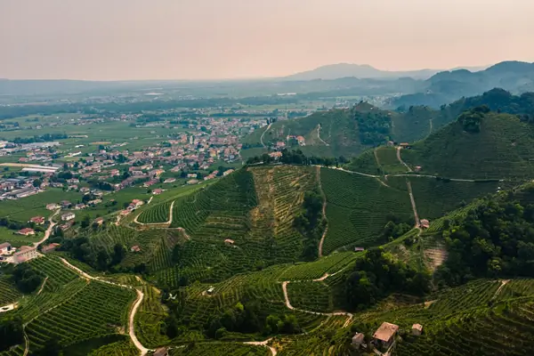

Home › Wine regions › Veneto
Veneto wine region

Photo: Alberto Caliman on Unsplash
Valpolicella, Amarone, Prosecco.
Vines grow in all 20 regions. Wines are classed DOCG, DOC and IGT.
Climate and soil
Mild climate between the Alps and the Adriatic. Mix of hills and plains.
Key areas and appellations
Valpolicella, Amarone della Valpolicella, Soave, Prosecco
Good to know
Amarone is made from partly dried grapes. Prosecco is usually produced by the tank method, not in the bottle.
The grapes of Veneto
- Corvina (red): sour cherry, almond, spice. Best known in Veneto.
- Prosecco (Glera) (sparkling): pear, honeysuckle, melon. Best known in Veneto, Italy.
- Garganega (white): almond, pear, citrus. Best known in Soave.
Notable producers in Veneto
- Allegrini
- Masi
- Dal Forno Romano
- Quintarelli
- Bisol
Official appellations
| Appellation | Status | Style | Grapes |
|---|---|---|---|
| Amarone della Valpolicella (2010) Rich, dry red made from grapes dried for months after harvest (appassimento), mainly Corvina with Corvinone and Rondinella. Usually 15% alcohol or more. | DOCG | Red | Corvina |
| Delle Venezie (2017) Inter-regional DOC covering all of Veneto and Friuli-Venezia Giulia plus the province of Trento, created in 2017 to control Italy's huge Pinot Grigio output. Pinot Grigio needs 85% of the grape, with a Bianco, a copper-tinted Ramato/Rosato and tank-method Spumante also allowed; there are no ageing rules. Good to know: with around 27,000 hectares, it is the world's largest Pinot Grigio appellation and about 95% is exported. | DOC | White, Rosé, Sparkling | Pinot Grigio |
| Asolo Prosecco (2009) From the hills of Asolo and the Montello ridge north-west of Treviso, this hillside Prosecco is at least 85% Glera. Nearly all of it is Spumante Superiore, from Brut to Demi-Sec plus a drier Extra Brut, alongside still and frizzante wines and a Brut Nature 'Sui Lieviti' re-fermented in bottle. Good to know: it became a DOCG in 2009 together with Conegliano Valdobbiadene. | DOCG | Sparkling, White | Glera |
| Bagnoli Friularo (2011) Red wines from the flat, clay-silt plain around Bagnoli di Sopra, south of Padua, made from at least 90% Raboso Piave, known locally as Friularo. Styles are Rosso (12 months), Riserva (24 months including 12 in barrel), late-harvest Vendemmia Tardiva and a Passito; a Classico sub-zone covers the commune of Bagnoli di Sopra itself. Good to know: Raboso is famously tart and tannic, so long ageing and partial drying are used to tame it; also labelled Friularo di Bagnoli. | DOCG | Red, Sweet | Raboso |
| Bardolino Superiore (2001) From morainic hills on the south-eastern shore of Lake Garda, this is a Corvina-led red with Rondinella, higher in alcohol (11.5% minimum) and lower in yield than Bardolino DOC. It cannot be released until a year after harvest, and a Classico version comes from the historic core around Bardolino. Good to know: the lake keeps the climate mild enough for olive trees, and the wine stays light, cherry-scented and peppery. | DOCG | Red | Corvina, Rondinella |
| Colli di Conegliano (2011) Still wines from the hills around Conegliano in Treviso province, the same morainic slopes that make Prosecco Superiore. The Bianco blends Manzoni Bianco with Pinot Bianco or Chardonnay; the Rosso is a Bordeaux-style blend with Marzemino, aged at least 2 years (Riserva 3, 12 months in wood). Good to know: two rare specialities live here too, Refrontolo (Marzemino, dry or passito) and the sweet white Torchiato di Fregona from dried Glera, Verdiso and Boschera. | DOCG | White, Red, Sweet | Manzoni Bianco, Pinot Blanc, Chardonnay, Cabernet Franc, Cabernet Sauvignon, Merlot, Marzemino |
| Colli Euganei Fior d'Arancio (2010) Moscato Giallo from the Euganean Hills south-west of Padua, cone-shaped volcanic hills of trachyte and marl rising out of the Po plain. At least 95% Moscato Giallo, made dry or sweet, as a sweet spumante or as a passito from dried grapes, which must age a year before release. Good to know: 'fior d'arancio' means orange blossom, the grape's signature scent; the sweet spumante is the most widely seen style. | DOCG | White, Sparkling, Sweet | Moscato Giallo |
| Conegliano Valdobbiadene Prosecco (2009) Prosecco Superiore from steep hills between Conegliano and Valdobbiadene, including Cartizze and Rive single-village wines. | DOCG | Sparkling | Glera |
| Lison (2010) Inter-regional DOCG straddling eastern Veneto and western Friuli around Portogruaro, Pramaggiore and Chions, on flat, mineral-rich alluvial clays near the Adriatic. White wine from at least 85% Tai (the former Tocai Friulano, now Friulano), with a Classico sub-zone around the historic villages of Lison and nearby hamlets. Good to know: this is the home ground of the grape's old Tocai name, and the DOCG (2010) sits inside the wider Lison Pramaggiore DOC. | DOCG | White | Friulano |
| Montello Rosso (2011) Bordeaux-style reds from the Montello, an isolated, red-clay hill on the Piave river north-west of Treviso. The blend is 40–70% Cabernet Sauvignon with Merlot, Cabernet Franc or Carmenère, aged at least 18 months (9 in oak); the Superiore needs 24 months including 12 in oak. Good to know: also labelled simply Montello; the area was once famed for the Venetian Republic's oak forests used to build its fleet. | DOCG | Red | Cabernet Sauvignon, Merlot, Cabernet Franc, Carmenère |
| Piave Malanotte (2010) Red wine from the Piave plain in Treviso and Venice provinces, on stony alluvial gravels and clays. At least 70% Raboso Piave with Raboso Veronese; a share of the grapes is air-dried to soften the grape's fierce acidity and tannin, and the wine ages at least 36 months, 12 in wood. Good to know: the name comes from the Malanotte family and the hamlet of Borgo Malanotte; it is one of Italy's most long-lived but least-known reds. | DOCG | Red | Raboso, Raboso Veronese |
| Recioto della Valpolicella (2010) The hills north of Verona, between Lake Garda and the Lessini mountains, produce this sweet red from Corvina, Corvinone and Rondinella dried for months after harvest (appassimento). It may carry Classico or Valpantena on the label, and a rare sparkling version is allowed. Good to know: Recioto is the older style; Amarone began as a Recioto that fermented out to dryness. | DOCG | Sweet, Sparkling | Corvina, Corvinone, Rondinella |
| Recioto di Gambellara (2008) Sweet white from the volcanic, basalt-rich hills of Gambellara and three neighbouring communes in Vicenza province, next door to Soave. Made from 100% Garganega, dried for months on racks or hung in bunches ('picai') before pressing, as a still Classico or a sweet spumante. Good to know: it is the Vicenza counterpart of Recioto di Soave, and the Gambellara DOC covers the dry wines and Vin Santo of the same zone. | DOCG | Sweet, Sparkling | Garganega |
| Recioto di Soave (1998) A golden sweet white from Garganega (at least 70%) dried on racks or hung in lofts over the winter, grown on the volcanic and limestone hills of the Soave zone east of Verona. Still and sparkling versions are allowed, and the best balance honeyed dried apricot with Soave's fresh acidity. Good to know: in 1998 it became the first DOCG in the Veneto. | DOCG | Sweet, Sparkling | Garganega |
| Soave Superiore (2001) Grown only on the hillsides east of Verona, on dark volcanic basalt and limestone, this is the more concentrated version of Soave, with at least 70% Garganega and the rest Trebbiano di Soave or Chardonnay. It ages at least a year before release and Riserva at least two, and the historic Classico core lies in Soave and Monteforte d'Alpone. Good to know: most top Soave is still sold as Soave Classico DOC rather than under this DOCG. | DOCG | White | Garganega |
| Arcole Plains DOC between Soave and Vicenza. | DOC | White, Red | Garganega, Merlot |
| Bagnoli di Sopra Small DOC south of Padua. | DOC | White, Red | Raboso, Friulano |
| Bardolino (1968) Light, cherry-fresh reds and pale Chiaretto rosé from the moraine hills on the eastern shore of Lake Garda, whose waters keep the climate mild. Corvina and/or Corvinone (at least 40% in practice) with Rondinella; the Classico area surrounds the town of Bardolino and there is also Novello and sparkling Chiaretto. Good to know: since the 2020 vintage reds may name one of three sub-zones — La Rocca, Montebaldo, Sommacampagna — and must then age a year before release; the more structured Bardolino Superiore is a separate DOCG. | DOC | Red, Rosé, Sparkling | Corvina, Rondinella |
| Breganze (1969) Foothill DOC north of Vicenza, between the Astico and Brenta rivers, where volcanic basalt and limestone hills give way to gravelly plain. Its Bianco is led by Friulano (Tai) and its Rosso by Merlot, alongside 85% varietals including Vespaiolo, Pinot Bianco, Cabernet and Marzemino, a Vespaiolo Spumante, Superiore and Riserva versions. Good to know: the star is Torcolato, a sweet golden wine from 100% Vespaiolo grapes dried in the loft until winter, released at the earliest at the end of the year after harvest. | DOC | White, Red, Sparkling, Sweet | Vespaiolo, Friulano, Pinot Blanc, Pinot Grigio, Chardonnay, Sauvignon Blanc, Merlot, Cabernet Sauvignon, Cabernet Franc, Pinot Noir, Marzemino |
| Colli Berici (1973) Karst limestone hills south of Vicenza, riddled with caves, with marl, red clay and some basalt soils and a warm, relatively dry climate on the south-facing slopes. The Rosso blends Merlot with at least 20% Tai Rosso (the local Grenache) and the Bianco is Garganega with Sauvignon; there are also many varietal wines, a Chardonnay-led Metodo Classico (15 months on lees, 30 for Millesimato) and a Passito, with Riserva needing about two years. Good to know: the Barbarano sub-zone is reserved for 100% Tai Rosso. | DOC | White, Red, Rosé, Sparkling, Sweet | Tai Rosso, Merlot, Cabernet Franc, Garganega, Sauvignon Blanc, Chardonnay |
| Colli Euganei (1969) A cluster of conical volcanic hills south-west of Padua, near the Abano spa towns, with soils of weathered trachyte, rhyolite and basalt plus limestone and marl, and a mild, almost Mediterranean climate. The Rosso is a Bordeaux-style blend of Merlot and the Cabernets (Riserva at least 24 months), while the Bianco blends Garganega, Tai and Sauvignon; fizzy Serprino (Glera) and Moscato are local favourites. Good to know: the aromatic Moscato Giallo passito and spumante have their own DOCG, Colli Euganei Fior d'Arancio. | DOC | White, Red, Sparkling, Sweet | Merlot, Cabernet Sauvignon, Cabernet Franc, Carménère, Garganega, Moscato Bianco, Raboso |
| Corti Benedettine del Padovano Lowland DOC south of Padua. | DOC | White, Red | Raboso, Friulano |
| Custoza (1971) Fresh, gently aromatic white from the morainic hills south-east of Lake Garda, near Verona. A blend of at least 70% Garganega, Trebbiano Toscano, Friulano (locally Tai) and Cortese (Bianca Fernanda), none above 45%, with up to 30% Chardonnay, Manzoni Bianco and others. Superiore is released from 1 April after harvest and Riserva after a year; there is also Spumante and Passito. Good to know: officially renamed from Bianco di Custoza to Custoza in 2022, though both names may still be seen. | DOC | White, Sparkling, Sweet | Garganega, Trebbiano, Friulano, Cortese, Chardonnay, Manzoni Bianco |
| Gambellara (1970) Small Vicenza-province DOC right next to Soave, on dark volcanic basalt hills around Gambellara, Montebello, Montorso and Zermeghedo. Wines are white, Spumante and sweet, based on at least 80% Garganega, with a Classico zone for the historic hills, a Superiore tier and a Vin Santo made only in the Classico area from dried grapes aged at least two years. Good to know: the sweet Recioto di Gambellara left this DOC in 2008 to become a DOCG in its own right. | DOC | White, Sparkling, Sweet | Garganega, Chardonnay, Pinot Blanc, Trebbiano |
| Lessini Durello (2011) Sparkling-only DOC in the Lessini mountains north of Verona and Vicenza, on volcanic basalt over limestone. At least 85% Durella, a very high-acid native grape, with Chardonnay, Garganega or the Pinots; since the recent rule change the name is used for tank-method (Charmat) wines. Good to know: bottle-fermented Durello is now labelled under the separate Monti Lessini DOC. | DOC | Sparkling | Durella, Chardonnay, Garganega, Pinot Noir |
| Lison Pramaggiore Inter-regional DOC on the Veneto-Friuli border. | DOC | White, Red | Friulano, Merlot, Refosco |
| Merlara Small DOC south-west of Padua. | DOC | White, Red | Merlot, Friulano |
| Monti Lessini Volcanic, basalt-rich hills of the eastern Lessini range, straddling the Verona and Vicenza provinces, where altitude and steep slopes keep the high-acid Durella grape taut. Since 2011 this DOC (the old Lessini Durello area of 1987) is the home of bottle-fermented Durello: at least 85% Durella, 18 months on the lees, 36 for the Riserva, with Charmat versions left to the separate Lessini Durello DOC. It also covers a Chardonnay-led Bianco, Pinot Nero and a Durello Passito from grapes dried at least two months. | DOC | White, Red, Sparkling, Sweet | Durella, Chardonnay, Garganega, Pinot Noir |
| Montello e Colli Asolani Still wines from the Montello and Asolo hills. | DOC | White, Red | Merlot, Cabernet Sauvignon |
| Piave Plains along the Piave river; home of Raboso. | DOC | Red | Raboso, Merlot, Cabernet Sauvignon |
| Prosecco (2009) Very large DOC covering nine provinces across Veneto and all of Friuli-Venezia Giulia, with Treviso and Trieste as named sub-zones. At least 85% Glera, mainly as tank-method Spumante or Frizzante; Prosecco Rosé (since 2020) adds 10–15% Pinot Nero, must be vintage-dated and spends at least 60 days in tank. Good to know: the hill zones of Conegliano Valdobbiadene and Asolo are separate DOCGs. | DOC | Sparkling, White, Rosé | Glera, Pinot Noir |
| Riviera del Brenta DOC between Padua and Venice. | DOC | White, Red | Merlot, Friulano |
| Soave (1968) White DOC east of Verona, from volcanic basalt hills in the Classico and Colli Scaligeri sub-zones down to alluvial plain. At least 70% Garganega, with up to 30% Trebbiano di Soave and/or Chardonnay, made still or as Spumante. Good to know: since 2019 labels may name one of 33 UGA hillside areas such as Foscarino or Monte Calvarina, and Soave Superiore is a separate DOCG. | DOC | White, Sparkling | Garganega, Chardonnay |
| Valpolicella (1968) Red DOC in the hills north of Verona, with the historic Classico zone (Fumane, Marano, Negrar, San Pietro in Cariano, Sant'Ambrogio) and the Valpantena valley as sub-zone. Corvina and/or Corvinone make up 45–95% with 5–30% Rondinella; Superiore needs 12% alcohol and a year's ageing. Good to know: this is the light, cherry-fruited base wine, while Ripasso, Amarone and Recioto are separate appellations. | DOC | Red | Corvina, Corvinone, Rondinella |
| Valpolicella Ripasso (2010) Valpolicella from the hills north of Verona that is passed over (ripassato) the still-sweet pomace left from making Amarone or Recioto, starting a second fermentation that adds alcohol, body and dried-fruit flavour. Same grapes as Valpolicella: Corvina and Corvinone with Rondinella. Wines may come from the Classico or Valpantena zones and a Superiore version needs extra ageing and alcohol. Good to know: once a traditional cellar technique, it became a DOC of its own in 2010 and is now one of Veneto's best-selling reds. | DOC | Red | Corvina, Rondinella |
| Venezia DOC covering Venice and Treviso provinces. | DOC | White, Red | Merlot, Pinot Grigio |
| Vicenza Province-wide DOC around Vicenza. | DOC | White, Red | Garganega, Merlot |
| Vigneti della Serenissima Traditional-method sparkling across the Veneto. | DOC | Sparkling | Chardonnay, Pinot Noir |
Veneto wines to try
Allegrini Amarone della Valpolicella Classico
Veneto · Amarone della Valpolicella · Corvina
Made from dried grapes: rich raisin, cherry, chocolate and spice.
Food: Braised beef, aged cheeses
Pieropan Soave Classico
Veneto · Soave Classico · Garganega
Fresh and almondy: pear, white flowers and a soft finish.
Food: Risotto, light fish
De Stefani Fallow Cuvée Rosso
Veneto · Veneto IGT · Raboso, Refosco
Easy, juicy Venetian red.
Food: Pasta, pizza
Allegrini Valpolicella
Veneto · Valpolicella · Corvina, Rondinella
Fresh, cherry-fruited Valpolicella.
Food: Pasta, charcuterie
La Collina dei Ciliegi Valpolicella Superiore Peratara
Veneto · Valpolicella Superiore · Corvina, Corvinone, Rondinella
Fuller Valpolicella from high vineyards: cherry and spice.
Food: Risotto, pork
Meroni Amarone della Valpolicella Classico Velluto
Veneto · Amarone della Valpolicella · Corvina, Rondinella
Mature Amarone: dried fruit, chocolate and spice.
Food: Aged cheese, braised meats
Tommasi Valpolicella Ripasso
Veneto · Valpolicella Ripasso · Corvina, Rondinella
Ripasso: richer Valpolicella with dried cherry notes.
Food: Lasagne, beef
Musella Recioto della Valpolicella
Veneto · Recioto della Valpolicella · Corvina, Rondinella
Sweet red from dried grapes: cherry, chocolate and spice.
Food: Chocolate desserts
De Stefani Rive di Refrontolo Valdobbiadene Prosecco Superiore Extra Brut Millesimato
Veneto · Conegliano Valdobbiadene Prosecco Superiore DOCG (Rive di Refrontolo) · Glera
Very dry single-hillside Prosecco: lily of the valley, green apple and a savoury, persistent finish.
Food: Oysters, baccalà mantecato, grilled scampi
De Stefani Valdobbiadene Prosecco Superiore Brut Millesimato
Veneto · Conegliano Valdobbiadene Prosecco Superiore DOCG · Glera
Golden apple and acacia blossom with fine, lasting bubbles and a smooth, medium body.
Food: Aperitif, fritto misto
De Stefani Prosecco 0.15 Extra Dry Millesimato
Soft and fruity: apple and a touch of banana, flowery finish.
Food: Mussels, smoked salmon
De Stefani Prosecco Rosé 0.15 Millesimato
Veneto · Prosecco Rosé DOC · Glera, Pinot Noir
Salmon-pink fizz with pear, wild strawberry, raspberry and violet; light and fragrant.
Food: Antipasti, seafood pasta, grilled prawns
De Stefani Prosecco Frizzante
Gently sparkling and fresh, with apple and a floral finish.
Food: Pappardelle with prawns, mussels
De Stefani Tombola di Pin Talento Millesimato Metodo Classico
Veneto · Metodo Classico (Talento), Refrontolo hills · Chardonnay, Pinot Noir
Single-vineyard traditional-method fizz from tufa soils, aged about ten years on its lees for great finesse.
Food: Oysters, fruits de mer
De Stefani Blanc de Noirs Metodo Classico
Veneto · Metodo Classico, Piave · Raboso
Unusual white fizz from red Raboso: bread crust, walnut and almond with a mineral finish.
Food: Oysters, raw scampi, asparagus risotto
De Stefani Redentore Prosecco
Apple, pear, candied citrus and jasmine; made with no added sulphites.
Food: Aperitif, ham, fresh cheeses
De Stefani Redentore Prosecco Rosé Brut Millesimato
Veneto · Prosecco Rosé DOC · Glera, Pinot Noir
Crisp, dry pink Prosecco from the sustainably farmed Redentore range.
Food: Aperitif, seafood
De Stefani Redentore 888 Millesimato
Fruity fizz with hints of nuts and toasted almond, fresh and mineral.
Food: Vegetable risotto, grilled fish
De Stefani Redentore Zero Sparkling
Veneto · Alcohol-free (dealcoholised, under 0.5%) ·
Alcohol-removed fizz with apple and exotic fruit, light and harmonious.
Food: Aperitif, any toast
De Stefani Naturalmente Prosecco Col Fondo
Veneto · Prosecco DOC (sui lieviti) · Glera
Bottle-fermented on its lees and left cloudy: bread crust, fresh and dry.
Food: Caprese salad, vitello tonnato
De Stefani DS Prosecco Brut
Easy, bright Prosecco with apple, pear and a hint of jasmine.
Food: Spaghetti alle vongole, salami
De Stefani DS Prosecco Rosé Brut Millesimato
Veneto · Prosecco Rosé DOC · Glera, Pinot Noir
Pale pink, with apple, raspberry and a hint of cyclamen.
Food: Prawn pasta, seafood
De Stefani DS Blanc de Blancs Brut
Veneto · Glera, Chardonnay, Pinot Blanc
Creamy-bubbled white fizz with apple, pear and passion fruit; a good Spritz base.
Food: Light starters, Venetian Spritz
De Stefani DS Zero Sparkling
Veneto · Alcohol-free (dealcoholised, under 0.5%) ·
Alcohol-removed sparkling with apple and exotic notes.
Food: Aperitif, any toast
De Stefani Zero Sparkling
Veneto · Alcohol-free (dealcoholised, under 0.5%) ·
Alcohol-free fizz with fine bubbles and a fruity, apple-led nose.
Food: Aperitif, nibbles
De Stefani Olmèra Single Vineyard
Veneto · Veneto, Piave Valley (Le Ronche estate) · Friulano, Sauvignon Blanc
Rich, velvety blend of Tocai (Friulano) and Sauvignon: ripe and exotic fruit, long finish.
Food: Risotto, shellfish, fruits de mer
De Stefani Vènis
Veneto · Veneto, Piave Valley (Le Ronche estate) · Sauvignon Blanc
Aromatic Sauvignon named after Venice's spice trade: citrus, exotic fruit and elderflower.
Food: Asparagus, pasta with clams, sea bass
De Stefani Pinot Grigio
Veneto · Veneto, Piave Valley (Le Ronche estate) · Pinot Grigio
Coppery-tinged and full, with fruit and a toasted-almond finish.
Food: Fish courses, egg dishes
De Stefani Vitàlys
Veneto · Veneto, Piave Valley (Le Ronche estate) · Chardonnay
Delicate Chardonnay with almond and apple and an elegant, long finish.
Food: Cicchetti, seafood salad, tempura
De Stefani Manzoni Bianco 6.0.13
Veneto · Veneto, Piave Valley (Le Ronche estate) · Manzoni Bianco
The Riesling x Pinot Blanc crossing at its zesty best: white flowers, citrus and minerality.
Food: Tuna tartare, fried fish
De Stefani Redentore Chardonnay
Sustainably farmed, fresh and fruity Chardonnay from the Piave Valley.
Food: Risotto, white meat
De Stefani Redentore Pinot Grigio
Crisp, easy Pinot Grigio from the Redentore range.
Food: Seafood, salads
De Stefani Redentore Sauvignon
Jasmine, peach and mint with a savoury, mineral finish.
Food: Asparagus, eggs, fish
De Stefani Redentore Zero White
Veneto · Alcohol-free (dealcoholised, under 0.5%) · Chardonnay, Sauvignon Blanc
Alcohol-removed white with tropical fruit, citrus and a flinty hint.
Food: Shellfish, salmon
De Stefani Naturalmente Orange
Veneto · Veneto, Piave Valley (Le Ronche estate) · Pinot Grigio
Skin-contact Pinot Grigio, wild-fermented and unfiltered: orange-peel colour, candied apricot and citrus.
Food: Fish, pasta, white meat
De Stefani DS Pinot Grigio
Pear, peach, acacia and toasted almond; fresh and balanced.
Food: Vegetable risotto, grilled fish
De Stefani DS Chardonnay
Fresh, fruity everyday Chardonnay from the DS range.
Food: Light pasta, chicken
De Stefani DS Sauvignon
Mango, musk and elderflower with lively acidity.
Food: Pesto linguine, asparagus, fresh cheese
De Stefani DS Zero White
Veneto · Alcohol-free (dealcoholised, under 0.5%) · Chardonnay, Sauvignon Blanc
Alcohol-removed white: exotic and citrus fruit, light and fresh.
Food: Shellfish, fried food
De Stefani Zero Chardonnay–Sauvignon
Veneto · Alcohol-free (dealcoholised, under 0.5%) · Chardonnay, Sauvignon Blanc
Alcohol-free white with citrus, exotic fruit and a flinty touch.
Food: Salmon, white meat
De Stefani Stèfen 1624 Single Vineyard
Veneto · Colli di Conegliano DOCG (Refrontolo) · Marzemino
The flagship: dry red from partly dried Marzemino, aged in small oak; ripe cherry, blackberry and violet.
Food: Game, Florentine steak, aged cheese
De Stefani Malanotte Single Vineyard
Veneto · Piave Malanotte DOCG · Raboso
Grand Raboso with part-dried grapes: blackberry, cherry, tobacco and dark chocolate, firm acidity and long life.
Food: Hare, pheasant, stews
De Stefani Kreda Riserva Single Vineyard
Veneto · Veneto, Piave Valley (Le Ronche estate) · Refosco
Old-vine Refosco from white clay ('kreda'): spiced currant and dark fruit.
Food: Lamb chops, roast meat
De Stefani Pinot Nero
Veneto · Veneto, Piave Valley (Le Ronche estate) · Pinot Noir
Elegant Piave Pinot Noir: delicate cherry, white pepper and silky tannins.
Food: Duck, mushroom dishes
De Stefani Solèr
Veneto · Veneto, Piave Valley (Le Ronche estate) · Merlot, Cabernet Sauvignon, Carménère, Refosco, Marzemino
Five-grape blend with part of the grapes dried in the loft (solèr): round, spicy, liquorice notes.
Food: Stuffed pasta, grilled meat
De Stefani Cabernet Sauvignon Riserva
Veneto · Veneto, Piave Valley (Le Ronche estate) · Cabernet Sauvignon
Structured, oak-aged Cabernet from the clay soils of the Piave.
Food: Braised beef, roasts
De Stefani Raboso Piave
Veneto · Veneto, Piave Valley (Le Ronche estate) · Raboso
The Piave's own grape: deep colour, red fruit, firm tannins and bright acidity.
Food: Pasta e fagioli, salami, mixed grill
De Stefani Venezia
Veneto · Venezia DOC · Merlot, Cabernet Sauvignon
Barrique-aged Bordeaux-style blend of Merlot and Cabernet Sauvignon.
Food: Tagliatelle al ragù, roast meat
De Stefani Rosé
Veneto · Veneto, Piave Valley (Le Ronche estate) · Raboso
Fresh Raboso rosé with blueberry, wild strawberry and pomegranate.
Food: Antipasti, grilled fish, pizza
De Stefani Bailo Amarone
Veneto · Amarone della Valpolicella DOCG · Corvina, Corvinone, Rondinella, Croatina
Dried-grape Valpolicella from an organic hillside estate: rich, ripe and spicy.
Food: T-bone steak, roast lamb, aged cheese
De Stefani Bailo Ripasso
Veneto · Valpolicella Ripasso DOC · Corvina, Corvinone, Rondinella, Croatina
Valpolicella refermented on Amarone skins: ripe red fruit, spice and silky tannins.
Food: Mushroom risotto, braised beef with polenta
De Stefani Redentore Cabernet Sauvignon
Sustainably farmed Piave Cabernet, generous and easy.
Food: Grilled meat
De Stefani Redentore Merlot
Round Merlot with raspberry, violet and cherry.
Food: Stews, roast beef, pork
De Stefani Redentore Raboso
Veneto · Raboso
Cherry, raspberry and floral hints with Raboso's lively acidity.
Food: Salami, stewed beef, barbecue
De Stefani Redentore Pinot Nero
Light, fragrant Pinot Noir from the Redentore range.
Food: Poultry, charcuterie
De Stefani Redentore Refosco
Blackberry, liquorice and dark chocolate; warm and full, no added sulphites.
Food: Hearty meat, wild mushrooms
De Stefani Redentore Carmenere
Veneto Carmenère, a variety long grown in the Piave: dark fruit and herbs.
Food: Grilled meat, hard cheese
De Stefani Redentore Zero Red
Veneto · Alcohol-free (dealcoholised, under 0.5%) ·
Alcohol-removed red with ripe red fruit and gentle spice.
Food: Aperitif, legumes
De Stefani Naturalmente Rosso
Veneto · Veneto, Piave Valley (Le Ronche estate) · Merlot, Raboso
Low-intervention red: long skin contact, wild yeasts, no filtration.
Food: Charcuterie, pasta
De Stefani DS Cabernet Sauvignon
Fruit-forward Cabernet with a gentle herbal touch.
Food: Grilled meat
De Stefani DS Raboso
Veneto · Raboso
Blackberry, morello cherry and spice with real structure.
Food: Pasta e fagioli, spicy cheese
De Stefani DS Terre Nobili
Veneto · Veneto IGT · Cabernet Sauvignon, Merlot, Raboso
Smooth blend with raspberry, spice and chocolate and velvety tannins.
Food: Grilled and stewed meat, lamb
De Stefani DS Carmenere
Cherry, blackberry, mint, chocolate and tobacco; soft and silky.
Food: Venison, duck, aged pecorino
De Stefani DS Zero Red
Veneto · Alcohol-free (dealcoholised, under 0.5%) ·
Alcohol-removed red with soft red fruit.
Food: Aperitif, vegetables
De Stefani Zero Red
Veneto · Alcohol-free (dealcoholised, under 0.5%) · Merlot, Refosco
Alcohol-removed Merlot and Refosco: ripe red fruit, light spice, soft body.
Food: Fresh cheese, legumes
De Stefani Refrontolo Passito Single Vineyard
Veneto · Colli di Conegliano DOCG (Refrontolo Passito) · Marzemino
Sweet red from dried Marzemino, the wine Mozart praised in Don Giovanni: ripe cherry, blackberry and violet.
Food: Dark chocolate, fruit cake
Food to try with Veneto wines
- Cheese board: Mixed cheeses need a mixed line-up: Riesling for soft and blue cheeses, soft Merlot for hard cheeses, and Prosecco's bubbles to refresh.
- Pizza: Sangiovese's acidity matches tomato and cuts melted mozzarella, and Prosecco's bubbles keep a salty, cheesy slice tasting fresh.
- Arancini: Crisp-fried Sicilian rice balls with molten cheese love fresh bubbles or a Sicilian white or soft red from their home island.
- Tomato bruschetta: Fresh tomato, garlic and olive oil on toast need a crisp, light Italian white or Prosecco to match their acidity and simplicity.
- Pavlova: Light, fruity and gently sweet sparkling or Muscat wines match the airy meringue, cream and fresh berries without feeling heavy.
- Panna cotta: Piedmont's light, frothy sweet wines suit this Piedmontese dessert, matching the vanilla cream and red berries.
Spirits from Veneto
More wine regions in Italy
The Wine Reference newsletter
New wines, stories and career guides, one email a week at most.
Over 18s only. Unsubscribe any time with one click. Your email is stored securely by Kit and never shared.
Support The Wine Reference
This guide is free, with no paywall. If it helped you choose a bottle, you can buy me a glass and keep it growing.
🍷 Buy me a glass